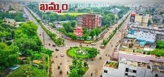

I have spent all my school days in my home town. I am from khammam, Telangagna, India.
Khammam, also known as Khammamett, is the city in Khammam district of the Indian state of Telangana. It is the fourth largest city in the state. It is the headquarters of the Khammam district and Khammam mandal also. It is located about 193 kilometres (120 mi) east of the state capital, Hyderabad, 61 kilometres (38 mi) from Suryapet, 120 kilometres (75 mi) from Warangal and also it is located about 121 kilometres (75 mi) North of the Andhra Pradesh state capital, Amaravathi. The river Munneru flows on the western side of the city. As of 2011 census of India, Khammam urban agglomeration has a population of 313,504. However, on 19 October 2012, the civic body of Khammam was upgraded to Municipal corporation Post upgradation to corporation Khammam population is approximated to be 3,07,000.